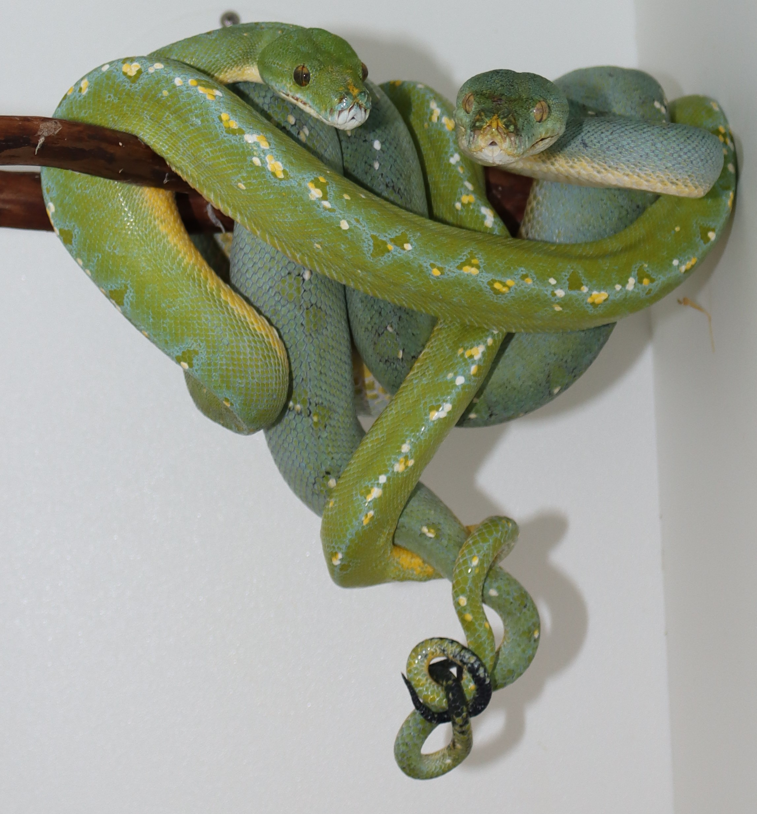
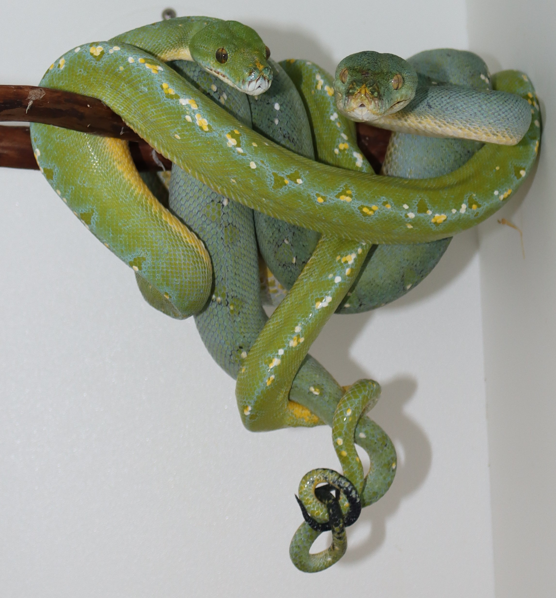

The North Western Green Python is a small python averaging around 3 to 4ft. The Northwestern Green Python predominantly inhabits suitable habitat of the Birds Head peninsula of West Papua Indonesia along with many offshore islands to the west namely the Raja Ampat Islands. Trade names often associated with this species are Sorong, Manokwari, Nabire, Misool, and Kofiau.
The North Western Species has both Red and Yellow Babies although it appears as you move from east to west the red babies get les and less common. Adults are typically a bright green adorned with blue spinal pattern of varying intensity along with variable amounts of white or yellow speckling mostly found on either side the spine withing pattern elements. The tail of this taxa is pointed and has varying amounts of black.
I work with a small group of founder adults I acquired as Monokwari and Sorong specimens. I have produced F1 offspring from my Manokwari specimens but not yet with my current Sorong pair.
 
